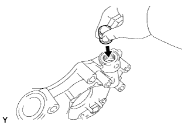
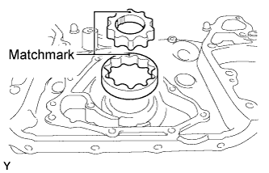
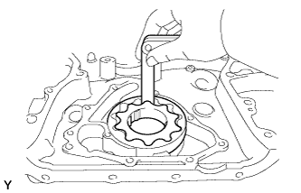
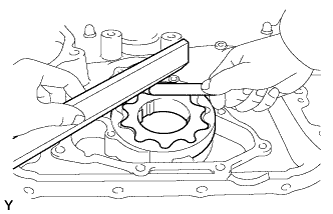
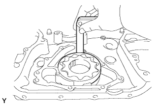

OIL PUMP > INSPECTION |
| 1. INSPECT OIL PUMP RELIEF VALVE |
 |
Coat the valve with engine oil, then check that it falls smoothly into the valve hole by its own weight.
If it does not, replace the relief valve. If necessary, replace the oil pump assembly.
| 2. INSPECT OIL PUMP ROTOR SET |
 |
Place the drive and driven rotors into the timing chain cover with the matchmarks facing upward.
Check the rotor tip clearance.
 |
Using a feeler gauge, measure the clearance between the drive and driven rotor tips.
Check the rotor side clearance.
 |
Using a feeler gauge and precision straightedge, measure the clearance between the rotors and precision straightedge.
Check the rotor body clearance.
 |
Using a feeler gauge, measure the clearance between the driven rotor and body.